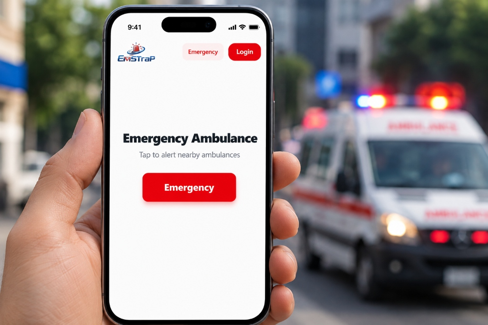
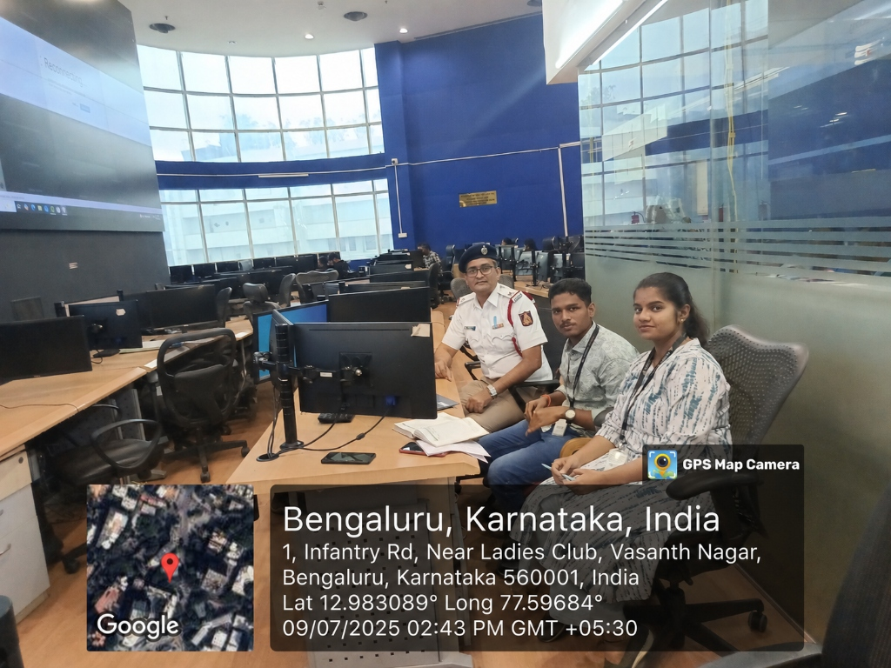
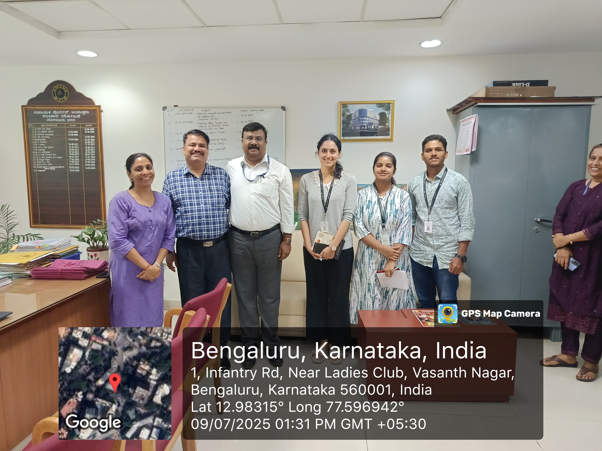

One Connected Network for Every Emergency
A B2G emergency communication and incident-reporting platform connecting citizens, authorities, emergency responders and control rooms under one synchronized layer.
CONNECT
Report. Connect. Coordinate. Respond.
Four synchronized operational pillars delivering rapid emergency assistance from the field to hospital triage.
REPORT
Citizens report emergencies with real-time location, photo evidence, and incident details through verified channels.
CONNECT
Information reaches the right authorities and control rooms instantly with zero telephonic bottleneck delay.
COORDINATE
Police, EMS, and municipal departments collaborate on a unified live incident thread with shared situational data.
RESPOND
Faster, more efficient emergency response with pre-cleared traffic corridors and ER pre-arrival trauma prep.



Emergency response is often disconnected.
Information comes from multiple sources, leading to delays, duplicate reports, and severe communication gaps between responding departments.
From fragmented information to one connected incident.
EMSTRAP Connect brings all emergency reports into a unified ecosystem, helping authorities respond faster, eliminate duplicate dispatches, and save crucial minutes.
CONNECT
A digital communication bridge between citizens and government emergency-response systems.
A citizen can report an emergency with location, description, image and incident details. EMSTRAP Connect processes the report and connects it with the appropriate emergency-response workflow.
Every report adds to a clearer picture.
Citizens can share key information that helps authorities understand and respond to the incident with precision.
Latitude & Longitude with GPS precision
Incident details in text by eye-witnesses
Verified scene photos from the ground
Time, type, severity, and casualty flags
One Incident. Multiple Reports.
When multiple people report the same incident, EMSTRAP Connect identifies reports from the same location and associates them with a single incident thread.
ONE INCIDENT
1 Incident + 5 Reports AssociatedPrevents dispatcher overload and eliminates duplicate ambulance or squad car dispatches.
From report to resolution.
A structured 8-step process to ensure faster, smarter and more coordinated emergency response.
Report
Citizen alert lodged
Locate
GPS triangulated
Identify
Duplicate detection
Analyze
AI triage parsing
Prioritize
Urgency ranking
Connect
Route to units
Coordinate
Multi-agency sync
Resolve
ER handoff & close
Know where the emergency is happening.
EMSTRAP Connect uses latitude and longitude from emergency reports to identify, organize and visualize incidents geographically in real-time.
Turn emergency reports into actionable information.
AI-assisted analysis helps understand the information provided and identify important incident characteristics in milliseconds.
A connected emergency layer for the city.
EMSTRAP Connect integrates seamlessly into a smart city's broader digital public-safety ecosystem, connecting urban IoT sensors with rapid civilian escalation.
Synchronized Smart City Mesh
From citizen report to coordinated response.
An additional digital channel for receiving and managing emergency reports, empowering CAD dispatchers with live GPS tracking and priority scoring.
One Incident. Every Relevant Agency.
EMSTRAP Connect enables collaboration between different departments around a shared incident thread, eliminating jurisdictional latency.
Ambulance
Medical CarePolice
Law & OrderFire & Rescue
Disaster & HazmatMunicipal
Civil ServicesOther Agencies
Transit & UtilitiesA stronger, more coordinated emergency response.

Engineered for Rapid Response
Connecting highways, city arteries, and medical networks seamlessly.
Government & Public-Safety Organizations.
Purpose-built for public safety infrastructure, municipal administrations, and law enforcement agencies.
Smart City Missions
Centralized urban response integration and civic data networks.
Police Departments
Modern CAD incident dispatch, transit escort, and patrol mesh.
Emergency Control Rooms
Duplicate detection and multi-source emergency report handling.
Public-Safety Authorities
Regional disaster resilience, fire dispatch, and civic alerts.
Government Institutions
Public policy compliance, emergency auditing, and regional safety.
A simpler, more connected flow.
Replacing outdated linear phone transfers with an intelligent, synchronized emergency bridge.
Traditional Response Flow
Linear, sequential latency; prone to verbal inaccuracies, missing GPS data, and repeated duplicate calls.
with EMSTRAP Connect
Instant, digital, multi-agency synced with verified location, scene images, and zero telephone queues.
Connect Your City to a Smarter Emergency Response
Ready to integrate EMSTRAP Connect into your police command, smart city operations, or public safety infrastructure? Schedule an executive briefing.